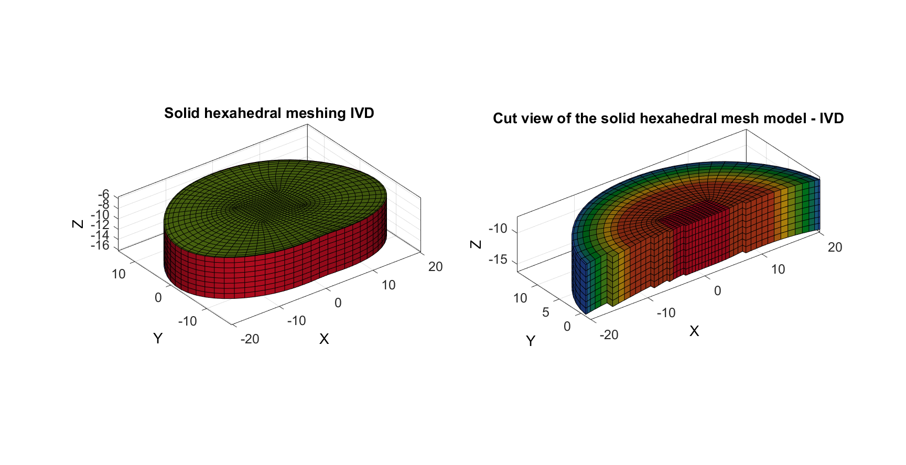
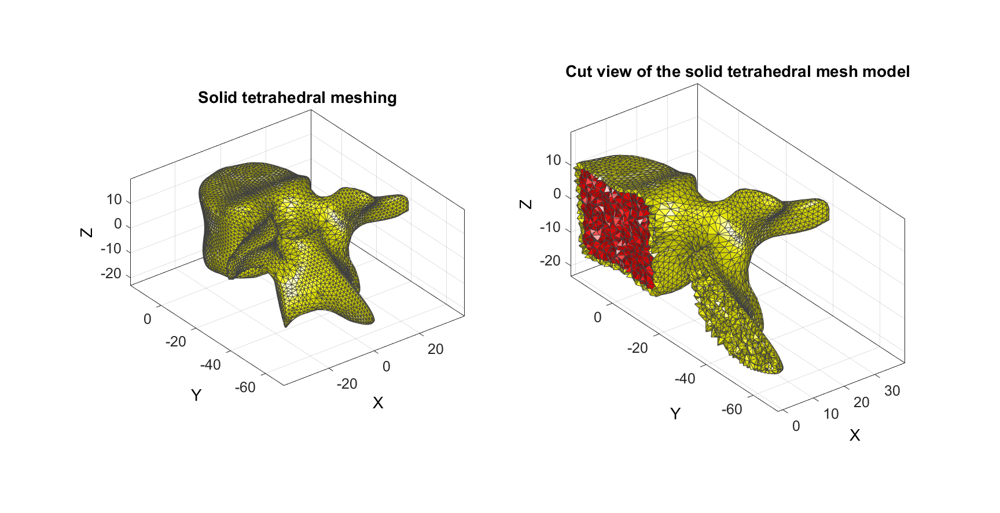
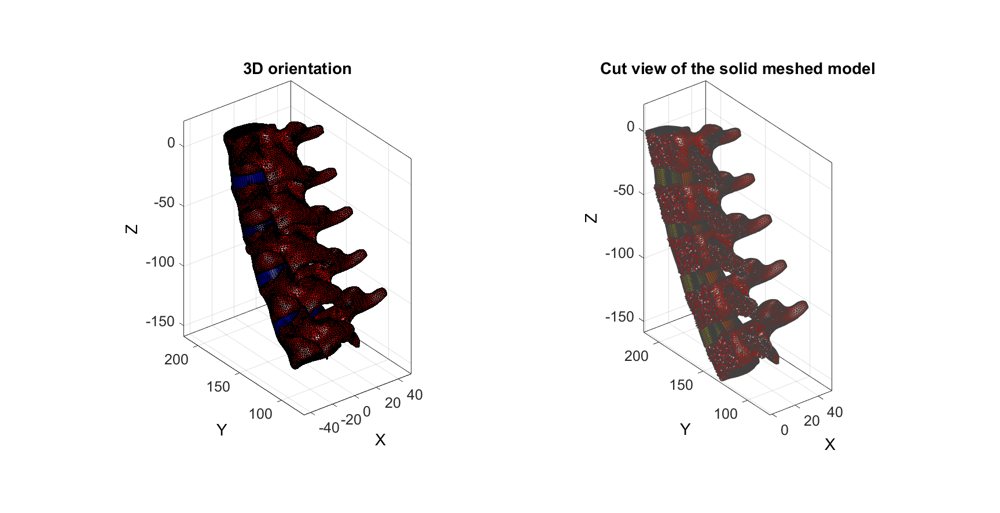
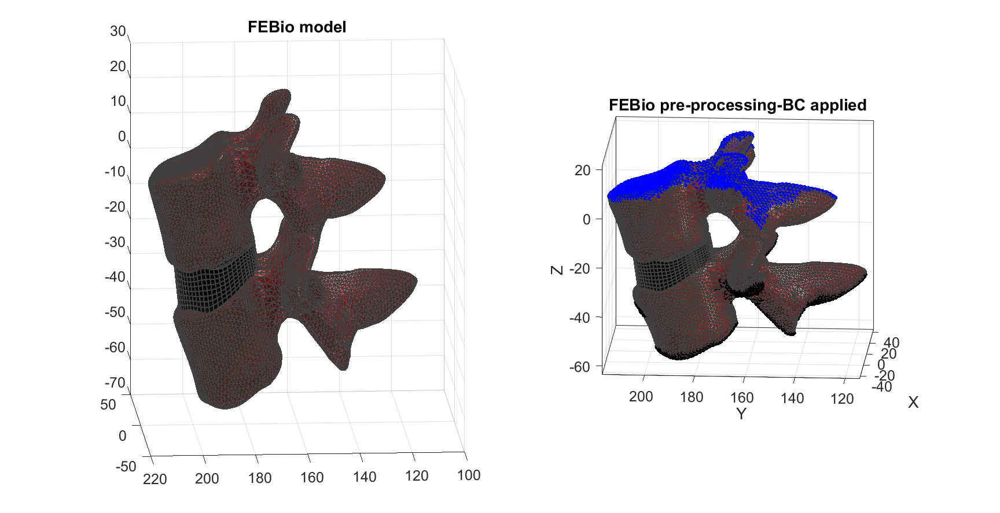
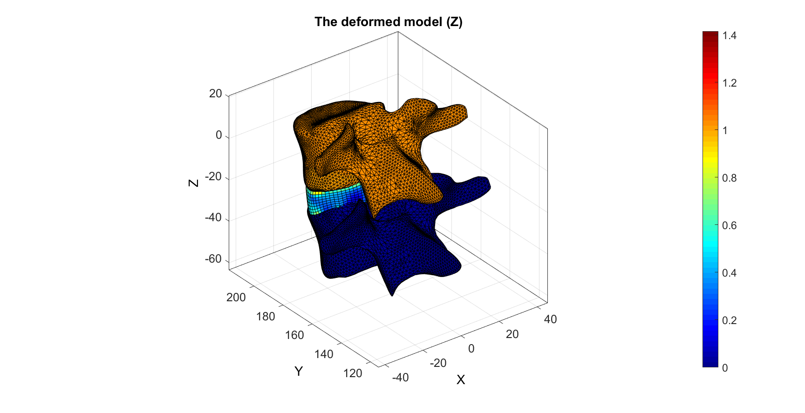

Contents
clear; close all; clc;
Lumbar Model Generator
This demo generates a geometric model of the lumbar spine including: five vertebrae (L1-L5) and four intervertebral disc (IVD). In this demo the dimensions of the bodies are based on the age and height of a person. Then, the geometrical model is meshed, initially with surface meshes and then with solid meshes, using TetGen for the vertebrae and a custom-made algorithm for the IVD. The bodies are oriented according to the lumbar angle, which can be imported by the user or left as default value of 43.49°. Finally, the meshed model is pre-processed to run the simulation in FEBio. Material properties, contacts and boundary conditions are defined and it can be directly run. In this demo, only a functional unit (L1-L2 and the IVD in-between) is pre-processed and the simulation is directly sent to FEBio.
for more information: lavecchia.carolina@gmail.com
Plotting settings
Define the parameters to use in all the plots
fontSize=15; edgeColor=0.25*ones(1,3); edgeWidth=1.5;
Control parameters
Define name and location for the febio file
% file name defaultFolder = fileparts(fileparts(mfilename('fullpath'))); outputpathName=fullfile(defaultFolder,'data','output','tmp'); febName=fullfile(outputpathName,'model_febio'); fprintf('--------------------LMG: LUMBAR MODEL GENERATOR------------------\n\n\n')
--------------------LMG: LUMBAR MODEL GENERATOR------------------
Function to call the gui and start the model. The user can define to use subject-specific dimensions (measured on scans) or average dimensions. The average dimensions are based on the height, age and gender of a person, and evaluated in the function averageModelInput.m
The GUI will ask the following inputs: - type of model ( 0 average, 1 subject-specific) if 0, another GUI will ask the following information: - sex of the patient ( m or f) - age (in years) - height (in cm) - alpha (lumbar curvature angle) If 1 - sex of the patient ( m or f) - age (in years) - height (in cm) - alpha (lumbar curvature angle) - path of the excel file where the dimensions for each vertebrae and IVD are saved
[varagout] = GUI_import;
Build default average geometrical model
If the user decides to use the model based on average dimensions, the function averageModelInput is used. In this function the correlation analysis between the height, age and all the dimensions identified on the vertebrae are evaluated.
fprintf('-----------------Build the geometrical model--------------------\n'); model_type=varagout.type ; switch model_type case 0 [dimensions] = averageModelInput(varagout); alpha = varagout.alpha;%43.49; case 1 dimensions = varagout; alpha = varagout.alpha; end
-----------------Build the geometrical model--------------------
Use the dimensions obtained to parameterize the model
[mesh_struct_IVD2,L_vert] = model_elaboration_gui(dimensions);
access the models parameterization vertebrae parameterization IVD saving IVD structure saving the vertebrae point clouds saving the coordinates for the vertebrae L1 saving the coordinates for the vertebrae L2 saving the coordinates for the vertebrae L3 saving the coordinates for the vertebrae L4 saving the coordinates for the vertebrae L5
Visualizing the meshes for the IVD
Y=mesh_struct_IVD2(1).V(:,2); YE=mean(Y(mesh_struct_IVD2(1).E),2); L=YE>mean(Y); [Fs,Cs]=element2patch(mesh_struct_IVD2(1).E(L,:),mesh_struct_IVD2(1).C(L)); cFigure; subplot(1,2,1); hold on; title('Solid hexahedral meshing IVD','FontSize',fontSize); gpatch(mesh_struct_IVD2(1).Fb,mesh_struct_IVD2(1).V,mesh_struct_IVD2(1).faceBoundaryMarker); axisGeom(gca,fontSize); camlight headlight; colormap(gjet); subplot(1,2,2); hold on; title('Cut view of the solid hexahedral mesh model - IVD','FontSize',fontSize); gpatch(Fs,mesh_struct_IVD2(1).V,Cs); axisGeom(gca,fontSize); camlight headlight; colormap(gjet); drawnow;
Mesh vertebrae
Mesh the vertebrae. Initially obtaining a surface meshed model, that can be exported selecting stl =1 Then, the solid meshed model are obtained using TetGen
fprintf('\n-----------------Solid tetrahedral meshing--------------------\n\n'); stl = 0; %if stl=1 then save the stl files for the vertebrae [Lmes] = meshing_vertebrae(stl);
-----------------Solid tetrahedral meshing-------------------- import vertebrae point clouds to mesh Working on the vertebrae L1 ------------- meshing the vertebral body ------------ ------------- meshing the pedicles and processes ------------ ------------- meshing the lamina ------------ ------------ writing the tetgen file--------------- %%%%%%%%%%%%%%%%%%%%%%%%%%%%%%%%%%%%%%%%%%%%% --- TETGEN Tetrahedral meshing --- 28-Jul-2017 11:42:02 %%%%%%%%%%%%%%%%%%%%%%%%%%%%%%%%%%%%%%%%%%%%% --- Writing SMESH file --- 28-Jul-2017 11:42:02 ----> Adding node field ----> Adding facet field ----> Adding holes specification ----> Adding region specification --- Done --- 28-Jul-2017 11:42:02 --- Running TetGen to mesh input boundary--- 28-Jul-2017 11:42:02 Opening C:\Users\lavecchc\Documents\GIBBON-master\GIBBON-master\lib_ext\tetGen\tempFiles\vertebrae_1.smesh. --- Done --- 28-Jul-2017 11:42:03 %%%%%%%%%%%%%%%%%%%%%%%%%%%%%%%%%%%%%%%%%%%%% --- Importing TetGen files --- 28-Jul-2017 11:42:03 --- Done --- 28-Jul-2017 11:42:03 Working on the vertebrae L2 ------------- meshing the vertebral body ------------ ------------- meshing the pedicles and processes ------------ ------------- meshing the lamina ------------ ------------ writing the tetgen file--------------- %%%%%%%%%%%%%%%%%%%%%%%%%%%%%%%%%%%%%%%%%%%%% --- TETGEN Tetrahedral meshing --- 28-Jul-2017 11:42:17 %%%%%%%%%%%%%%%%%%%%%%%%%%%%%%%%%%%%%%%%%%%%% --- Writing SMESH file --- 28-Jul-2017 11:42:17 ----> Adding node field ----> Adding facet field ----> Adding holes specification ----> Adding region specification --- Done --- 28-Jul-2017 11:42:17 --- Running TetGen to mesh input boundary--- 28-Jul-2017 11:42:17 Opening C:\Users\lavecchc\Documents\GIBBON-master\GIBBON-master\lib_ext\tetGen\tempFiles\vertebrae_2.smesh. --- Done --- 28-Jul-2017 11:42:18 %%%%%%%%%%%%%%%%%%%%%%%%%%%%%%%%%%%%%%%%%%%%% --- Importing TetGen files --- 28-Jul-2017 11:42:18 --- Done --- 28-Jul-2017 11:42:18 Working on the vertebrae L3 ------------- meshing the vertebral body ------------ ------------- meshing the pedicles and processes ------------ ------------- meshing the lamina ------------ ------------ writing the tetgen file--------------- %%%%%%%%%%%%%%%%%%%%%%%%%%%%%%%%%%%%%%%%%%%%% --- TETGEN Tetrahedral meshing --- 28-Jul-2017 11:42:31 %%%%%%%%%%%%%%%%%%%%%%%%%%%%%%%%%%%%%%%%%%%%% --- Writing SMESH file --- 28-Jul-2017 11:42:31 ----> Adding node field ----> Adding facet field ----> Adding holes specification ----> Adding region specification --- Done --- 28-Jul-2017 11:42:32 --- Running TetGen to mesh input boundary--- 28-Jul-2017 11:42:32 Opening C:\Users\lavecchc\Documents\GIBBON-master\GIBBON-master\lib_ext\tetGen\tempFiles\vertebrae_3.smesh. --- Done --- 28-Jul-2017 11:42:33 %%%%%%%%%%%%%%%%%%%%%%%%%%%%%%%%%%%%%%%%%%%%% --- Importing TetGen files --- 28-Jul-2017 11:42:33 --- Done --- 28-Jul-2017 11:42:33 Working on the vertebrae L4 ------------- meshing the vertebral body ------------ ------------- meshing the pedicles and processes ------------ ------------- meshing the lamina ------------ ------------ writing the tetgen file--------------- %%%%%%%%%%%%%%%%%%%%%%%%%%%%%%%%%%%%%%%%%%%%% --- TETGEN Tetrahedral meshing --- 28-Jul-2017 11:42:46 %%%%%%%%%%%%%%%%%%%%%%%%%%%%%%%%%%%%%%%%%%%%% --- Writing SMESH file --- 28-Jul-2017 11:42:46 ----> Adding node field ----> Adding facet field ----> Adding holes specification ----> Adding region specification --- Done --- 28-Jul-2017 11:42:46 --- Running TetGen to mesh input boundary--- 28-Jul-2017 11:42:46 Opening C:\Users\lavecchc\Documents\GIBBON-master\GIBBON-master\lib_ext\tetGen\tempFiles\vertebrae_4.smesh. --- Done --- 28-Jul-2017 11:42:47 %%%%%%%%%%%%%%%%%%%%%%%%%%%%%%%%%%%%%%%%%%%%% --- Importing TetGen files --- 28-Jul-2017 11:42:47 --- Done --- 28-Jul-2017 11:42:47 Working on the vertebrae L5 ------------- meshing the vertebral body ------------ ------------- meshing the pedicles and processes ------------ ------------- meshing the lamina ------------ ------------ writing the tetgen file--------------- %%%%%%%%%%%%%%%%%%%%%%%%%%%%%%%%%%%%%%%%%%%%% --- TETGEN Tetrahedral meshing --- 28-Jul-2017 11:43:00 %%%%%%%%%%%%%%%%%%%%%%%%%%%%%%%%%%%%%%%%%%%%% --- Writing SMESH file --- 28-Jul-2017 11:43:00 ----> Adding node field ----> Adding facet field ----> Adding holes specification ----> Adding region specification --- Done --- 28-Jul-2017 11:43:00 --- Running TetGen to mesh input boundary--- 28-Jul-2017 11:43:00 Opening C:\Users\lavecchc\Documents\GIBBON-master\GIBBON-master\lib_ext\tetGen\tempFiles\vertebrae_5.smesh. --- Done --- 28-Jul-2017 11:43:01 %%%%%%%%%%%%%%%%%%%%%%%%%%%%%%%%%%%%%%%%%%%%% --- Importing TetGen files --- 28-Jul-2017 11:43:01 --- Done --- 28-Jul-2017 11:43:02

Visualizing the mesh obtained for the vertebrae L1. The cut view shows the elements of the vertebrae which correspond to the cancellous (in red) and the cortical bone (in yellow)
Y=Lmes(1).VT(:,1); YE=mean(Y(Lmes(1).E),2); L=YE>mean(Y); [Fs,Cs]=element2patch(Lmes(1).E(L,:),Lmes(1).C(L)); cFigure; subplot(1,2,1); hold on; title('Solid tetrahedral meshing','FontSize',fontSize); patch('Faces',Lmes(1).FT,'Vertices',Lmes(1).VT,'FaceColor','flat','CData',Lmes(1).C,'lineWidth',0.2,'edgeColor',edgeColor); axis tight; axis equal; %grid on; colormap(autumn); axisGeom(gca,fontSize); camlight headlight; drawnow; hold on; subplot(1,2,2); title('Cut view of the solid tetrahedral mesh model','FontSize',fontSize); patch('Faces',Fs,'Vertices',Lmes(1).VT,'FaceColor','flat','CData',Cs,'lineWidth',0.2,'edgeColor',edgeColor); axisGeom(gca,fontSize); colormap(autumn); camlight headlight; drawnow;
orientation post mesh
The meshed bodies (vertebrae and IVD) are oriented according to the lumbar curvature 'alpha', imported by the user.
[CM, CM_IVD,mesh_struct_IVD2,Lmes2, EP] = orientation_gui(Lmes, mesh_struct_IVD2, alpha, dimensions.IVD, dimensions.hL, L_vert);
The meshes of the IVD is modified to fit better the curvatures of the vertebrae in order to facilitate the contacts and run a faster simulation.
[IVD] = enforce_contacts(mesh_struct_IVD2,EP);
Visualizing the whole model.
cFigure; subplot(1,2,1); title('3D orientation','FontSize',fontSize); for(j=1:4) patch('Faces',IVD(j).FE,'Vertices',IVD(j).V,'FaceColor','b','faceAlpha',0.8,'edgeColor','k','lineWidth',0.5);%'flat','CData',C,'lineWidth',edgeWidth,'edgeColor',edgeColor); hold on; end for(k=1:5) patch('Faces',Lmes2(k).FT,'Vertices',Lmes2(k).VT,'FaceColor','r','faceAlpha',0.8,'edgeColor','k','lineWidth',0.5);%'flat','CData',C,'lineWidth',edgeWidth,'edgeColor',edgeColor); hold on; end axisGeom(gca,fontSize); colormap(autumn); camlight headlight; drawnow; subplot(1,2,2); title('Cut view of the solid meshed model','FontSize',fontSize); for(j =1:4) Y=IVD(j).V(:,1); YE=mean(Y(IVD(j).E),2); L=YE>mean(Y); [Fs,Cs]=element2patch(IVD(j).E(L,:),IVD(j).C(L)); patch('Faces',Fs,'Vertices',IVD(j).V,'FaceColor','flat','CData',Cs,'lineWidth',0.2,'edgeColor',edgeColor),hold on; end for(j =1:5) Y=Lmes2(j).VT(:,1); YE=mean(Y(Lmes2(j).E),2); L=YE>mean(Y); [Fs2,Cs2]=element2patch(Lmes2(j).E(L,:),Lmes2(j).C(L)); patch('Faces',Fs2,'Vertices',Lmes2(j).VT,'FaceColor','flat','CData',Cs2,'lineWidth',0.2,'edgeColor',edgeColor); end axisGeom(gca,fontSize); camlight headlight; drawnow;
write & run FEBio
febio_preprocessing_gui2.m prepares the febio input file. The material properties, contacts and the boundary conditions are defined. This feature is in work in progress. Presently, it can prepare and run (if the flag runFEBio is set equal to 1) the FE model for a single functional unit (FU), level L1-L2 and the IVD in between them. The vertebrae L2 is fully constrained at the bottom surface and the prescribed displacement on the upper surface is 1 mm.
nbodies = 2;
runFEBio = 1;
fprintf('----------------- FE pre-processing: FEBio --------------------\n\n');
FEB_struct = febio_preprocessing_gui2(febName,nbodies, Lmes2,IVD, runFEBio);
----------------- FE pre-processing: FEBio -------------------- import vertebrae dataset %%%%%%%%%%%%%%%%%%%%%%%%%%%%%%%%%%%%%%%%%%%%% --- Writing FEBio XML object --- 28-Jul-2017 11:43:29 Adding Module level Adding Globals level Adding Material level Adding Geometry level ----> Adding node field ----> Adding element field ----> Adding tet4 element entries.... ----> Adding tet4 element entries.... ----> Adding hex8 element entries.... ----> Adding surface field ----> Adding NodeSet field Adding Boundary level ----> Defining fix type boundary conditions ----> Defining prescribe type boundary conditions Adding Contact field ----> Defining contact ----> Setting contact parameters ----> Defining contact surface pair ----> Setting contact parameters ----> Defining contact surface pair Adding LoadData level ----> Defining load curves Adding Step level ----> Adding Module field ----> Adding Control field Adding Output level ----> Adding plotfile field ----> Adding logfile field Writing .feb file --- Done --- 28-Jul-2017 11:43:46 %%%%%%%%%%%%%%%%%%%%%%%%%%%%%%%%%%%%%%%%%%%%% --- STARTING FEBIO JOB --- 28-Jul-2017 11:43:46 Waiting for log file... Proceeding to check log file...28-Jul-2017 11:43:51 ------- converged at time : 0.1 ------- converged at time : 0.2 ------- converged at time : 0.3 ------- converged at time : 0.4 ------- converged at time : 0.5 ------- converged at time : 0.6 ------- converged at time : 0.7 ------- converged at time : 0.8 ------- converged at time : 0.9 ------- converged at time : 1 --- Done --- 28-Jul-2017 11:49:41 
LMG https://celavecchia.github.io/LMG/
Carolina Eleonora Lavecchia, lavecchia.carolina@gmail.com